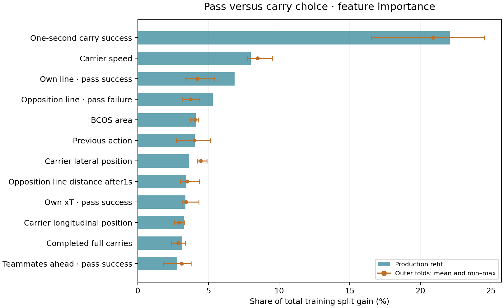
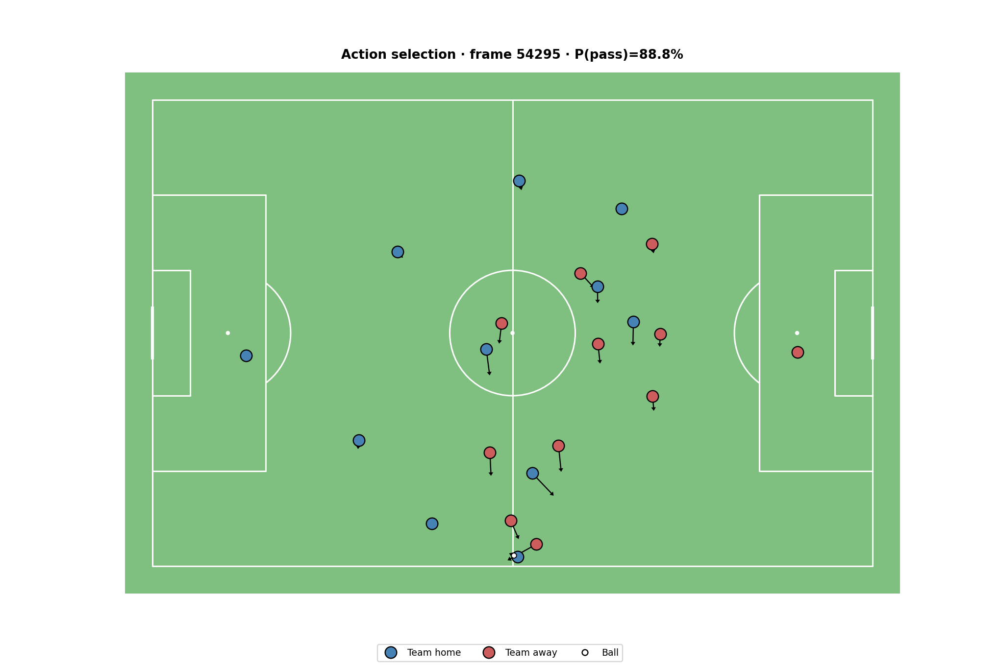
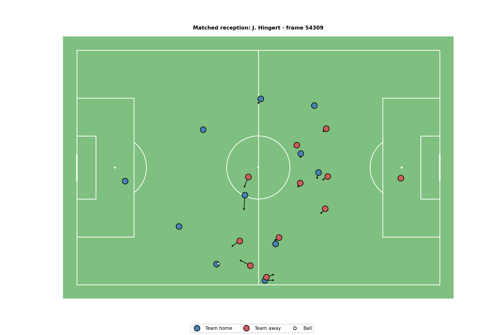

from pathlib import Path
import os
import pandas as pd
import matplotlib.pyplot as plt
import jax
jax.config.update("jax_enable_x64", True)
from PRESS import PRESS
opendata = Path(os.environ.get("SKILLCORNER_OPENDATA", Path.cwd().parent / "opendata"))
match_dir = opendata / "data/matches/1925299"
press = PRESS.from_skillcorner(match_dir)
frame_id = 54295
# Observed context: getters resolve the frame and possession annotations.
frame = press.get_frame(frame_id).iloc[0]
context = press.get_frame_context(frame_id)
match_clock_min = pd.to_timedelta(frame.timestamp).total_seconds() / 60
# Score is absent from these tracking rows: read the current possession's
# dynamical event rather than inserting a constant in the model call.
possessions = press.get_player_possessions()
current_possession = possessions.loc[
possessions.frame_start.le(frame_id) & possessions.frame_end.ge(frame_id)
].iloc[0]
events = pd.read_csv(
opendata / "data/matches" / match_dir.name / f"{match_dir.name}_dynamic_events.csv",
low_memory=False,
)
origin = events.loc[
events.event_type.eq("player_possession")
& events.event_id.eq(current_possession.possession_id)
].iloc[0]
score_difference = float(origin.team_score - origin.opponent_team_score)
from PRESS.model import PassSelectionModel
xT_grid = PassSelectionModel.pretrained().xt_grid
result = press.compute_risk_frame(
frame_id, xT_grid,
start_type=context["start_type"], previous_action=context["previous_action"],
completed_canonical_drives=context["completed_canonical_drives"],
match_clock_min=match_clock_min, score_difference_prefix=score_difference,
)
from PRESS.visualization import plot_action_selection
fig, ax = plot_action_selection(press, frame_id, show=False)
fig.savefig("figures/vignette_04_action_pitch.png", dpi=170)
fig.savefig("figures/vignette_04_action_pitch.svg")
plt.close(fig)Action selection
1. Motivation and model overview
At each moment of individual ball control, a player either releases a pass or keeps carrying the ball. Action selection estimates the probability of these two observed decisions from the current tracking state and match context. Stalpaert et al. (Stalpaert 2022) study the same binary pass–carry choice, while Fernández et al. (Fernandez, Bornn, and Cervone 2021) treat a related problem with three actions (shooting, passing, carrying) inside a possession-value framework. PRESS models the pass–carry decision of outfield players.
Let \(s\) denote the current game state and \(A\) the chosen action. The target is
\[ q(s)=P(A=\mathrm{pass}\mid s),\qquad P(A=\mathrm{carry}\mid s)=1-q(s). \]
We model action selection as a binary classification problem and estimate \(q(s)\) with an XGBoost classifier (Chen and Guestrin 2016). The classifier takes a vector of features that summarizes the game state and returns the probability of passing. The features are described first, followed by the likelihood used to train the model.
The model describes observed behaviour across the sampled decisions. To characterize the pass–carry choice, PRESS represents both alternatives using features computed from tracking data and separately fitted execution and destination-choice models. The carry option is described by its immediate execution risk, the space available to the carrier and the tactical configuration along the direction of movement. The pass option is described by its probability of completion and the tactical consequences of its possible destinations, accounting for both successful and unsuccessful outcomes.
2. Model features
The model uses 30 features, 28 numerical and two categorical, organized into four groups. Several spatial descriptors are shared with Pass selection, where they characterize the current carrier position and individual candidate destinations. Here, these descriptors also characterize the projected carry position and are aggregated over possible passing outcomes. The four groups describe the two action alternatives and the context in which the decision is made.
| Group | Question | Count |
|---|---|---|
| Carrier state and ball retention | How well can the player keep carrying? | 6 |
| Spatial and tactical configuration | Where does the carry lead, and how are the teams organized there? | 8 |
| Passing opportunities | What would a pass look like, and how would it end? | 11 |
| Possession and match context | How did control start, and what is the match situation? | 5 |
Carrier state and ball retention (6 features)
These features describe the player and the room available to keep moving with the ball.
- x, y position. Where the carrier is on the pitch, in the team’s attacking orientation: deep in the team’s own half or near the opponent’s goal, central or wide.
- Speed. How fast the carrier is moving: running with the ball, or almost standing.
- Velocity angle. The direction of movement relative to the attacking axis: forward, sideways or backward. It is missing when the player is effectively stationary. Velocity comes from the centred seven-frame tracking smoother, whose three-frame future support makes the current implementation suitable for offline analysis.
- Carry-success probability \(1-d(s)\). The chance that the player still has the ball one second from now if carrying continues. A high value means carrying is safe in the current situation. It comes from the separate ball-drive risk model and measures execution risk; pass selection uses the carry-loss probability \(d(s)\) itself, an alternative encoding of the same information.
- BCOS area. The probability-weighted area accessible to the carrier before interception by an opponent, in \(\mathrm{m}^2\). A large value means room to run, a small one means the carrier is boxed in. Ball carrier open space (BCOS) is a concept introduced for association football by Bandara et al. (Bandara et al. 2025). In PRESS, the BCOS model gives, for each point around the carrier, the probability that the carrier arrives there before an opponent can intercept; integrating this field over a 40 m surrounding domain gives the probability-weighted area.
The carry-loss probability is defined as
\[ d(s)=P(\mathrm{loss\ within\ 1\,s}\mid A=\mathrm{carry},s), \]
The feature \(1-d(s)\) measures the probability of retaining control over the next second, while BCOS area measures the space accessible to the carrier. Both characterize the carry option from the same current state.
Spatial and tactical configuration (8 features)
These features describe where the carry would take the player and how the two teams are arranged around that place.
Six of them are evaluated at a projected position: where the carrier would be one second from now if the carrier kept the current velocity,
\[ \widehat x_{\mathrm{bc}}(1)=x_{\mathrm{bc}}(0)+v_{\mathrm{bc}}(0)\,(1\,\mathrm{s}). \]
This is a hypothetical evaluation point. The spatial descriptors are evaluated at the projected position using the current player positions, following the conventions introduced in Pass selection.
- Own-team xT. The expected threat of the projected position for the carrier’s team, that is, how much a possession at that spot tends to lead towards a goal. A high value means the carry heads into a dangerous attacking zone. xT was introduced by Singh (Singh 2018); its construction in PRESS is described in the xT vignette.
- Opponent xT. The same quantity from the opponent’s point of view. It indicates how dangerous that spot would be for the carrier’s team if possession were lost there.
- Nearest own-team line index and nearest opposition line index. These are the pressure lines of Fernández, Bornn and Cervone (Fernandez, Bornn, and Cervone 2021). In PRESS, the current outfield longitudinal positions are clustered into three lines with complete linkage, excluding the original carrier from the own-team roster and the extreme-x goalkeeper proxy. The index says which line is closest to the projected position, for the carrier’s own team and for the opposition. As in pass selection, the three lines of each team are numbered from the attacking line (1) to the defensive line (3), with the intermediate line assigned index 2. Own-team lines are thus ordered along the opponent’s attacking direction, and opposition lines along the carrier team’s attacking direction.
- Signed distance to the nearest own-team line and to the nearest opposition line. How far that line is from the projected position along the carrier team’s attacking direction, for both teams. A positive value means the line is ahead of the point and a negative value means it is behind. A small positive distance to the opposition line means the carrier is about to meet it.
The other two features use the carrier’s current position.
Teammates ahead and opponents ahead. How many players of each team are further up the pitch than the carrier, along the attacking direction. They show how many teammates are in front (potential forward options) and how many opponents are still to be beaten. For a set of players \(G\) and a point \(r\),
\[ N_G(r)=\sum_{k\in G}\mathbf 1\{\delta\,x_k>\delta\,r_x\},\qquad \delta\in\{-1,+1\}, \]
where \(\delta\) is the carrier team’s attacking direction for both rosters. The carrier is excluded and tracked goalkeepers are kept. The count is taken over the whole pitch width.
Passing opportunities (11 features)
These features characterize the passing alternative by combining the spatial descriptors introduced in Pass selection with the probabilities of choosing and completing a pass to each destination. The aim is to summarize both the feasibility of passing and its possible tactical consequences: where the carrier’s team would retain possession after a successful pass, and where the opponent would recover possession after a failed pass. Two separately fitted PRESS components provide the destination-choice and completion probabilities for every candidate destination \(j\) on the native one-metre pitch grid:
\[ \pi_j(s)=P(J=j\mid A=\mathrm{pass},s),\qquad p_j(s)=P(\mathrm{completion}\mid J=j,A=\mathrm{pass},s). \]
The first, \(\pi_j\), says how likely a passer in this situation is to target cell \(j\) and comes from the pass-destination model. The second, \(p_j\), says how likely a pass to that cell is to arrive and comes from the pass-probability model. The action model uses the flat destination model with its fitted validation temperature and isotonic-calibrated completion probabilities. Both are evaluated from the current game state.
Multiplying them splits every possible pass into two branches, a completed pass and a failed pass:
\[ w_j^+=\pi_jp_j,\qquad w_j^-=\pi_j(1-p_j). \]
The weight \(w_j^+\) is the chance that the pass goes to cell \(j\) and succeeds, and \(w_j^-\) is the chance that it goes there and fails.
Expected pass success. The overall chance that a pass would succeed, averaged over the likely destinations. A high value means passing is easy right now.
\[ P(\mathrm{completion}\mid A=\mathrm{pass},s)=\sum_j\pi_jp_j=\sum_jw_j^+. \]
The other ten features aggregate the destination-specific spatial descriptors from Pass selection: expected threat, nearest team-line indices and players ahead. For a spatial property \(\Phi(j)\), the two outcome-weighted sums are:
\[ \Phi^+(s)=\sum_jw_j^+\Phi(j),\qquad \Phi^-(s)=\sum_jw_j^-\Phi(j). \]
Branch + describes a completed pass, after which the carrier’s team retains possession at the destination. Branch − describes a failed pass, after which the opponent is assumed to recover possession near the destination assigned by the destination-choice model. The two branches describe the tactical consequences of the passing option.
The sums \(\Phi^+\) and \(\Phi^-\) are weighted by the joint probabilities of destination and outcome, conditional on attempting a pass, so each sum carries the probability of the corresponding outcome together with the spatial properties of its destinations. An unlikely branch therefore contributes little even when its destinations have large descriptor values.
The change in possession determines how the spatial descriptors are interpreted. Expected threat measures the offensive value of possession in a team’s attacking orientation, so each team has its own xT surface. We therefore use the carrier team’s expected threat \(X_{own}\) in the success branch and the opponent’s expected threat \(X_{opp}\) in the failure branch, evaluated in the opponent’s attacking direction.
For line indices and player counts, the spatial representation introduced in Pass selection is retained in both branches. The labels own and opp always refer to the original carrier’s team and its opponent, respectively. Each team’s lines retain their own numbering, from the attacking line (1) to the defensive line (3), and the ahead counts use the original carrier team’s attacking direction for both rosters. A player ahead in the carrier team’s direction is behind in the recovering team’s direction, so when possession changes the same descriptors are read from the recovering team’s point of view, as summarized below.
The table below summarizes the tactical interpretation of the spatial descriptors introduced in Pass selection in the two outcome branches.
| Spatial descriptor | Success branch (+) | Failure branch (−) |
|---|---|---|
| Expected threat | \(X_{own}\): receiving team’s xT | \(X_{opp}\): recovering team’s xT |
| \(L_{own}\) | Receiving team’s own line | Recovering team’s opposition line |
| \(L_{opp}\) | Receiving team’s opposition line | Recovering team’s own line |
| \(N_{own}\) | Teammates ahead of reception | Opponents behind recovery |
| \(N_{opp}\) | Opponents ahead of reception | Teammates behind recovery |
Table. Tactical interpretation of destination-specific spatial descriptors under successful and unsuccessful passing outcomes. The labels own and opp refer to the original ball carrier’s team and its opponent, respectively. Ahead and behind are interpreted relative to the attacking direction of the team holding possession in each branch.
Expected threat (2 features). Expected threat is taken for the team that would hold the ball in each branch. \(\sum_jw_j^+X_{own}(j)\) measures the success-weighted offensive value of retaining possession at the possible destinations. \(\sum_jw_j^-X_{opp}(j)\) measures the failure-weighted offensive value of the opponent recovering possession there. Together, they describe the offensive opportunity of passing and the potential danger of losing the ball.
Pressure-line structure (4 features). The nearest own-team and opponent line indices, as defined in the previous group but evaluated at each destination from the current player positions, are aggregated once with \(w_j^+\) and once with \(w_j^-\). The line numbering of the previous group applies.
\[ \sum_jw_j^+L_{own}(j),\quad \sum_jw_j^-L_{own}(j),\quad \sum_jw_j^+L_{opp}(j),\quad \sum_jw_j^-L_{opp}(j). \]
For example, consider a pass directed towards the opponent’s third pressure line. If the pass succeeds, the receiver obtains the ball close to the opposition’s defensive line (line 3). If the pass fails, the opponent recovers the ball close to its own defensive line (the same line 3). Thus, weighting \(L_{opp}(j)\) by \(w_j^+\) summarizes the opposition line indices near possible successful receptions, while weighting it by \(w_j^-\) summarizes the recovering team’s own line indices near possible recoveries. The same interpretation applies to \(L_{own}(j)\). In the feature names,
team_line_pass_successis the own-team index with \(w_j^+\) andopp_line_pass_failurethe opposition index with \(w_j^-\).Player positioning (4 features). The numbers of teammates and opponents ahead of the possible destinations, using the ahead-count convention defined in Pass selection. A backward destination can have more players ahead of it than a forward one. The ahead-count function \(N_G\) is evaluated at every candidate destination for teammates and opponents, with the carrier team’s attacking direction for both rosters, and aggregated the same way:
\[ \sum_jw_j^+N_{own}(j),\quad \sum_jw_j^-N_{own}(j),\quad \sum_jw_j^+N_{opp}(j),\quad \sum_jw_j^-N_{opp}(j). \]
In the success branch, \(N_{own}\) describes teammates ahead of the reception point (forward options), and \(N_{opp}\) describes opponents still to be beaten. In the failure branch, the same counts describe the configuration from the recovering team’s perspective: \(N_{opp}\) counts its own players behind the recovery point, and \(N_{own}\) counts opposing players behind that point, relative to the recovering team’s attacking direction.
Together, the eleven features give the classifier the likelihood, location and consequences of passing.
Possession and match context (5 features)
These features describe how the current individual control began and the match situation. The first four features follow the conventions of Pass selection; the number of completed carries is an additional feature specific to action selection.
- Start type (categorical). The event that gave the player the ball: a reception, interception, recovery or restart.
- Previous action (categorical). What the player did immediately before. It keeps the start context until the player completes a full one-second carry, and from then on it records
ball_drive. - Match minute. Time elapsed in the match.
- Score difference. Carrier-team goals minus opponent goals at that frame.
- Completed carries. The number of complete one-second carry intervals already performed during the current individual possession, in other words how long the player has already been on the ball. It is a history summary available at decision time. A pass released after 0.4 s has zero completed carries and keeps its start context; a pass released after 2.4 s has two completed carries and
ball_driveas previous action.
The two categorical variables keep their original labels, including unknown, and the encoded vocabulary is fitted on training data. The possession and checkpoint vignette describes the underlying segmentation.
3. Likelihood and learning
The model is trained on observed decisions. Each decision \(i\) has two ingredients: the feature vector \(z_i\) described above, which summarizes the game state at that moment, and its outcome \(y_i\), equal to 1 if the player passed and 0 if the player carried.
XGBoost learns the probability of passing from these pairs. It builds an additive ensemble of regression trees \(f_\psi\), in which each new tree corrects the errors left by the previous ones. The ensemble returns a score for every decision, and a logistic function turns that score into the probability of passing:
\[ q_i=P(y_i=1\mid z_i)=\frac{1}{1+\exp[-f_\psi(z_i)]}. \]
Training chooses the parameters \(\psi\) that minimize the regularized Bernoulli negative log-likelihood, which penalizes confident predictions that disagree with the observed action:
\[ \mathcal L(\psi)=-\sum_{i=1}^{n}\left[y_i\log q_i+(1-y_i)\log(1-q_i)\right]+\Omega(\psi), \]
where \(\Omega(\psi)\) penalizes tree complexity and leaf weights to limit overfitting. The action-selection benchmark reports the hyperparameter search, match-wise validation and predictive performance.
4. Feature importance and interpretation
The contribution of each feature to the fitted model is measured with XGBoost split gain. The figure reports the total gain attributed to each conceptual feature, with one-hot encoded levels grouped under their original categorical input. These values describe how the trained ensemble uses its inputs.

The carry-success probability \(1-d(s)\) (drive_success_1s) is the most influential feature: it accounts for 22.09% of total gain in the production model and ranks first in all five evaluation folds. Carrier speed follows at 8.00%, so the player’s immediate capacity to advance with the ball is central to the pass–carry decision. The passing-option summaries also contribute substantially: the own-team line index weighted by successful passing outcomes (team_line_pass_success) accounts for 6.85%, and the opposition line index weighted by failed outcomes (opp_line_pass_failure) for 5.32%. BCOS contributes 4.10% and the previous-action context 4.04%.
Together, these results are consistent with a classifier that combines the feasibility of continuing the carry with the spatial consequences of the available passing opportunities. Correlated features can share gain among themselves, and split gain depends on the opportunities a feature offers for tree partitioning. The full fold-wise analysis is documented in the feature-importance analysis.
5. Application to a game state
Brisbane Roar FC–Perth Glory: N. Acosta chooses a pass at checkpoint 54295, and J. Hingert receives it at frame 54309. The first plot reports the model’s probability of choosing a pass at that checkpoint. Set SKILLCORNER_OPENDATA to your local open-data repository (Data setup).
Context-label meanings and the previous_action convention are defined in the User guide.

from PRESS.visualization import plot_frame
reception_frame = 54309
fig, ax = plot_frame(press, reception_frame, title="Matched reception: J. Hingert · frame 54309", show=False)
fig.savefig("figures/vignette_04_action_reception.png", dpi=170)
fig.savefig("figures/vignette_04_action_reception.svg")
plt.close(fig)
The benchmark contains the cohort definition, match-disjoint validation, XGBoost tuning, held-out metrics and published comparison. The observed example illustrates the fitted model.
References
Bandara, Ishara, Sergiy Shelyag, Sutharshan Rajasegarar, Daniel B. Dwyer, Eun-jin Kim, and Maia Angelova. 2025. “Time-Series Analysis of Ball Carrier Open-Space (BCOS) in Association Football.” SN Computer Science 6 (4): 302. https://doi.org/10.1007/s42979-025-03815-7.
Chen, Tianqi, and Carlos Guestrin. 2016. “XGBoost: A Scalable Tree Boosting System.” In Proceedings of the 22nd ACM SIGKDD International Conference on Knowledge Discovery and Data Mining. https://doi.org/10.1145/2939672.2939785.
Fernandez, Javier, Luke Bornn, and Daniel Cervone. 2021. “A Framework for the Fine-Grained Evaluation of the Instantaneous Expected Value of Soccer Possessions.” Machine Learning 110: 1389–1427. https://doi.org/10.1007/s10994-021-05989-6.
Singh, Karun. 2018. “Introducing Expected Threat (xT).” https://karun.in/blog/expected-threat.html.
Stalpaert, Louis. 2022. “CounterRisk: Predicting Counter-Attacks, Even If They Don’t Occur.” Master’s thesis, KU Leuven. https://belgianfootball.s3.eu-central-1.amazonaws.com/s3fs-public/rbfa/docs/pdf/rbfa_knowledge_centre/studies/RBFA_Study_30_Counter_Risk.pdf.